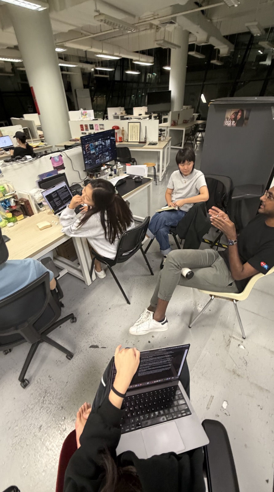
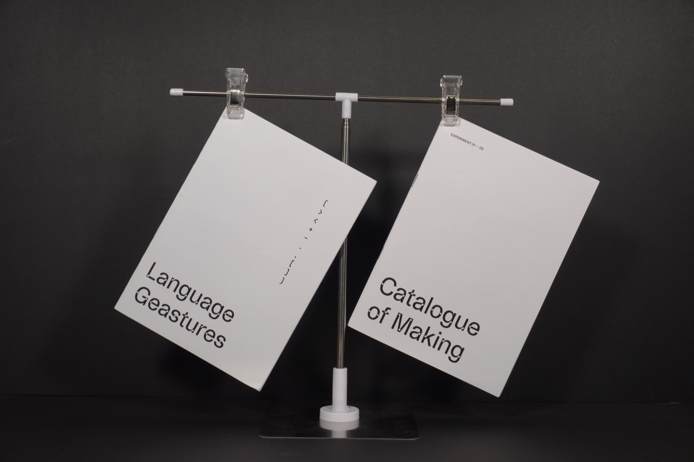
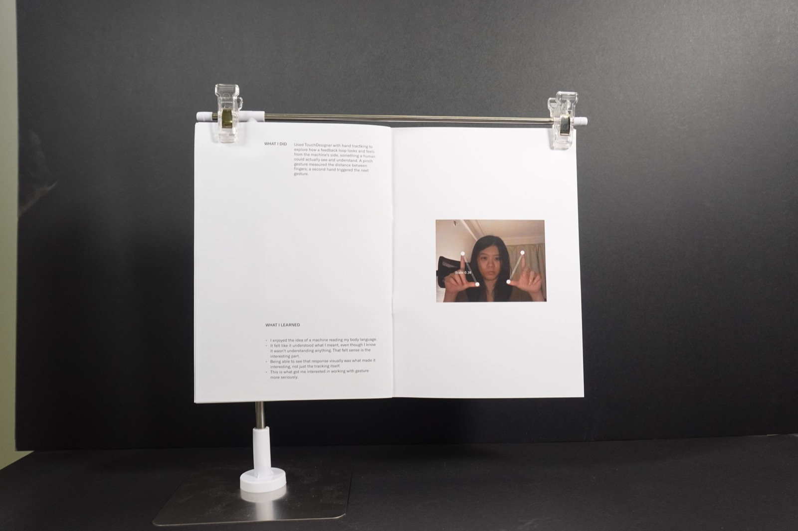
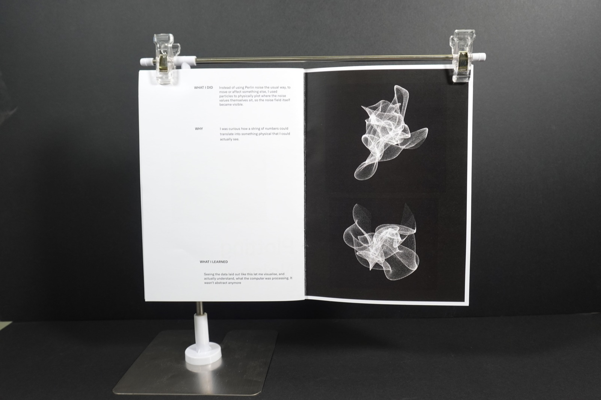
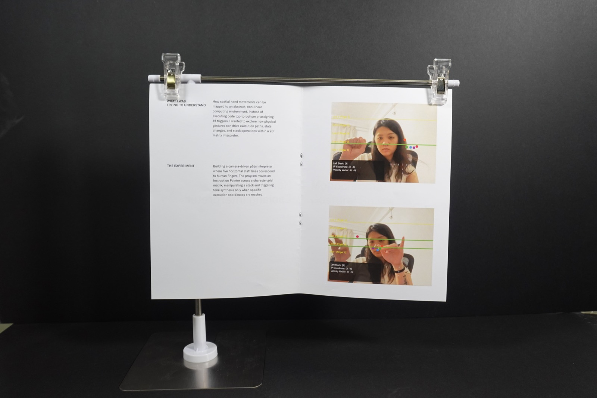
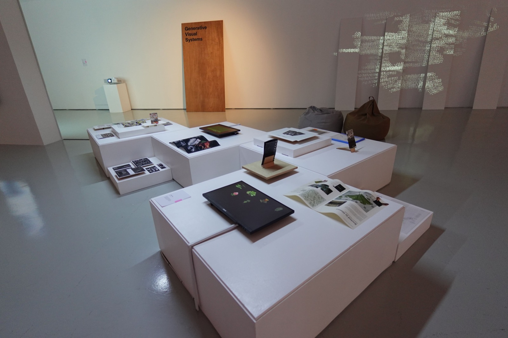
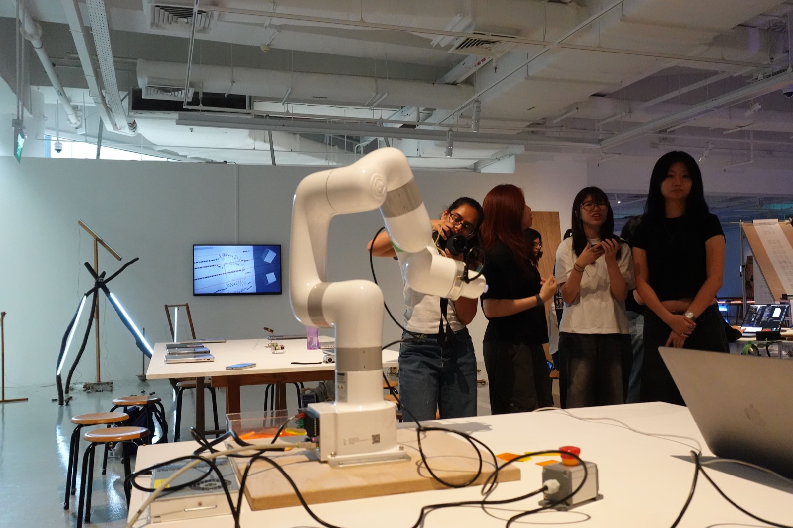
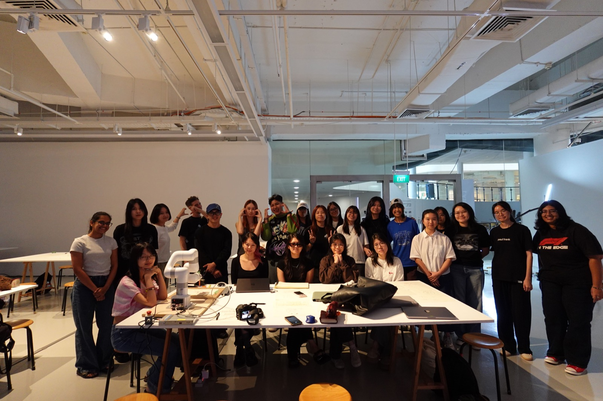

Week 7 · Semester 1 · 28 Sep – 2 Oct
Looking to Gestures
Trigger
From the feedback loop to the hand
Week 7 started where Week 6 left off: what does a feedback loop actually look like in AI-assisted creative coding? The hand tracking I built in TouchDesigner was the first time I saw my hands directly change what the computer did, and that pulled me towards gesture. The conversations this week pushed me further, until Andreas put it as a question: could I design a gesture-based coding language?
- Hand tracking in TouchDesigner: my hands changing what the computer does
- Hand interaction, second recording
Feedback
Feedback Breakdown
I had four conversations this week: a consultation, a group consult with Kapi and Andreas, and my formative individual consult. Their feedback falls into three themes.
Making my thinking accessible
Both consultations came back to the same problem: my ideas were hard to enter. There were a lot of words to simplify. I was told to add a glossary and footnotes, and an index for context, and to tie the bits and pieces together so people can understand where I'm coming from and how I did it. My first answer was mindmaps and references. I also realised that what an audience expects and what I want to communicate don't line up yet. I can sit with that, but it made me think harder about how I present the work, perhaps through a well-written, curated introduction. Design is always evolving, and my vision for designers has always been to be the bridge between users and us.
Bringing the hand back into the loop

I floated my idea to Kapi to see how they would understand it. They pointed out that working with a computer is different from working with AI, and that the inner workings of AI are unknown even to the people who build it. They asked what it would mean to peel that apart, and whether my visual tool could interpret what happens behind the scenes. They also suggested bringing the natural feedback loop of working with physical material, of working with your hands, into the artificial one, and attempting to humanise that interaction, even if it keeps misinterpreting.
Thinking in chapters, and a language
Andreas asked how each of my projects formalises, and suggested thinking in chapters: phases of the project, reflection on findings, a series of experiments that develop into a prototype, and design outcomes. He asked what happens to creative coding now that agents can write code faster and better, and how we interact with the machine to code. I was also pointed to software art of the late 1990s and 2000s, and asked to think about the outcome: will it generate images, be functional, or be visual, and what aesthetic do I have in mind? Then he asked the question that redirected my project: how could I design a gesture-based coding language, where a gesture is compiled into an output? At the formative consult the advice was the same from another side: start with gesture language, decide whether the outcome is images, function or visuals, decide what aesthetic I have in mind, and keep the deliverables consistent.
References
Esoteric languages and mid-air gestures
To understand how programming languages are designed, I looked at esoteric programming languages such as Brainfuck and Piet, languages made to test what a language can be rather than to be practical. When coding was for fun, people used code as an expression instead of a function, and that was a different lens for me. I also read Microsoft Research's study of mid-air hand gestures and human preferences for gesture types. We might be familiar with touch gestures, but interacting directly with a webcam is a different story.
Brainfuck (Urban Müller, 1993) has only eight commands, each a single character (> < + − . , [ ]). They move a pointer along a row of memory cells and change the values inside, so even “Hello World!” becomes a long string of symbols.
Piet (David Morgan-Mar), named after Piet Mondrian, writes programs as images that look like abstract paintings. The program moves between blocks of colour, and the change in hue and lightness from one block to the next decides the instruction.

Experiments
FingerSheet and Gesture-to-Shape
FingerSheet
Idea. Esoteric programming languages, especially Brainfuck, after Andreas asked how I could design a gesture-based coding language.
Why. FingerSheet was my first step into understanding how I could create a language. I was still confused about the difference between a user interface and a programming language, so I wanted to see if I could make decisions just by using my fingers on a string of instructions.
How. A camera-driven p5.js interpreter where five horizontal staff lines stand for five fingers. An instruction pointer moves across a grid of characters, manipulating a stack, and plays a tone when it reaches certain coordinates: the thumb pushes a value, the ring finger turns the cursor, the middle finger steers it and the pinky pops a value into sound.
Reflection. Partway through I questioned my own build: wasn't it just scanning where my fingers landed? That question is the difference between an instrument and a language.
- FingerSheet: five staff lines, one per finger; the red dots are my tracked fingertips
- When a fingertip crosses a line, the line lights up green and the interpreter acts on it
Why sound. I was trying to understand the feedback loop in that sense. At that point I wasn't sure how esoteric languages work, so I went back to something simple to understand the flow of things.
Gesture-to-Shape
Idea. A simpler, more direct version of FingerSheet.
Why. To see how computer vision could turn hand posture into a direct, tactile response: finger counting.
How. ml5 handPose counts raised fingers. A fist or one finger drops a circle, two fingers a square, three a triangle; the shapes fall and stack, and the canvas clears at twenty. Monochrome.
Reflection. It felt slightly awkward, because it isn't natural for a peace sign to show a rectangle, or for three fingers to show a triangle. I felt like I was just triggering presets.
Why gravity, and why twenty. I just wanted the shapes to drop, so I could see where each one was prompted. I didn't want it to be too overwhelming, so I stopped at twenty. Looking back, I think I was subconsciously trying to tag my actions to the outcome.
Fist → circle
Two fingers → square
Three fingers → triangle
Formative
Compiling everything for the table
The night before the formative review I compiled all my experiments, with write-ups, into a print, refined the sketch and set up the table. The formative catalogue had six entries: the kerning agent, collaborating with AI, hand tracking and plotting noise in TouchDesigner, FingerSheet, and gesture-to-shape.

Inside the prints

Spread 1
Spread 2: plotting noise
Spread 3
Dissertation
Where the research question stood
My proposal at the end of September still asked how a creative tool could make the feedback loop between a designer and an AI visible, and what that changes about how the designer works. I then rewrote the introduction around gesture as a way to make that process legible, and Andreas's question set up the shift that happened in Week 8.
Reflection
Reflecting



In the moment. Partway through FingerSheet I stopped and asked myself whether it was just scanning where my fingers landed. That question, the difference between an instrument and a language, was the surprise of the week.
Looking back. I was still confused about the difference between a user interface and a programming language, and this week was me starting to separate the two.
What I was judging by. I was judging by my felt sense of agency. I didn't create that system specifically, and I didn't know what each gesture could do, so it didn't feel right.
What mattered most. Of all the feedback, the question of user interface versus gesture-based programming language was the most important. I had to be clear about it, and it was the biggest shift.
Moving Forward
Going into Week 8, the proposal had to be rebuilt around a gesture language, with a clearer story, simpler words and a decision about what the output would be.